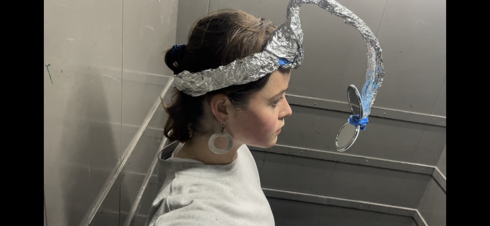
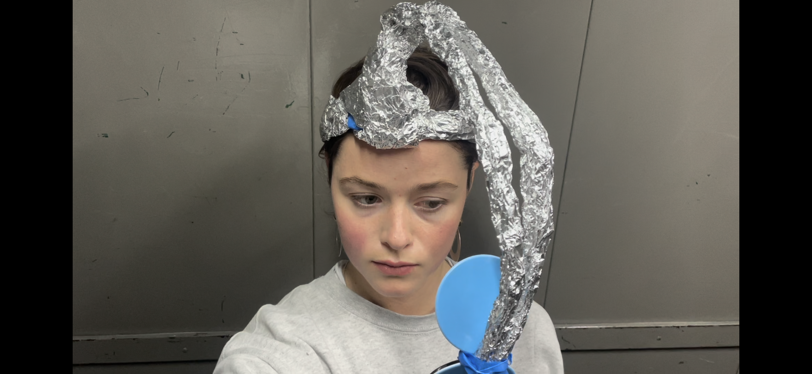
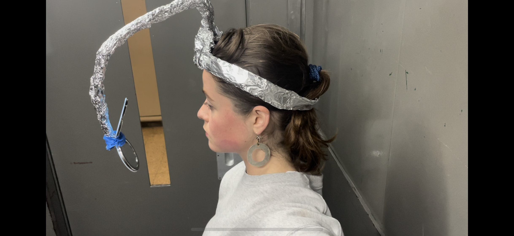

The Mediated Self
If I can only perceive myself through mirrors and media, then my “best version” is always a mediated construct. How can the self be understood if it is always projected, filtered, delayed, or distorted?
„To become the best version of yourself“ is a contemporary mantra of self-optimization, visibility and curated identity. There are several predetermined assumptions behind this phrase: // That there is such a thing as the „best“ version, a stable ideal self. // One can achieve this through control, improvement and enhancement. // This self is always reflected, on screens, in mirrors, in others’ validation This prosthesis explores how self-perception is inherently mediated through technologies of reflection such as mirrors, cameras, screens and others. In a culture obsessed with “becoming the best version of yourself,” the mirror becomes a site of both aspiration and distortion. The interactive reflection reveals a fragmented, delayed, or multiplied image of the self, exposing how our pursuit of perfection depends on external mediation. The prosthesis invites viewers to confront not their “best” self, but the distance between who they are and how they appear.


